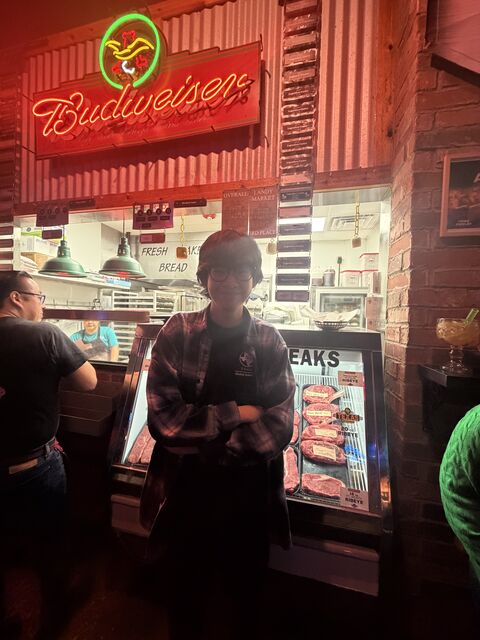
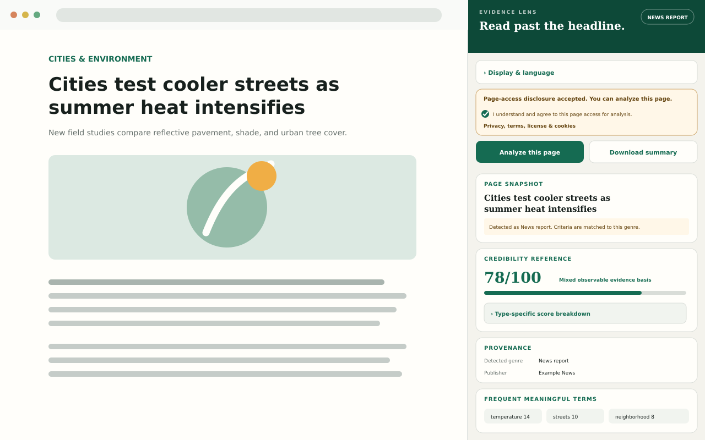
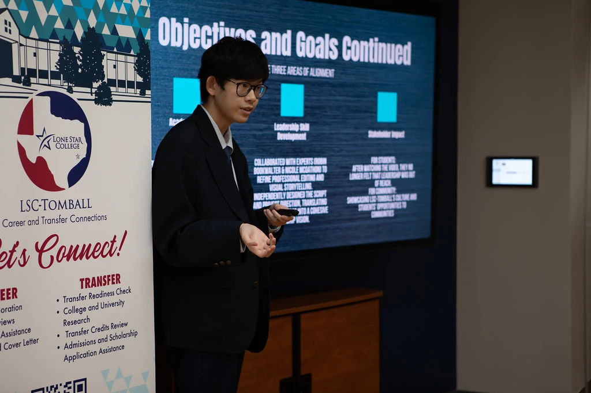
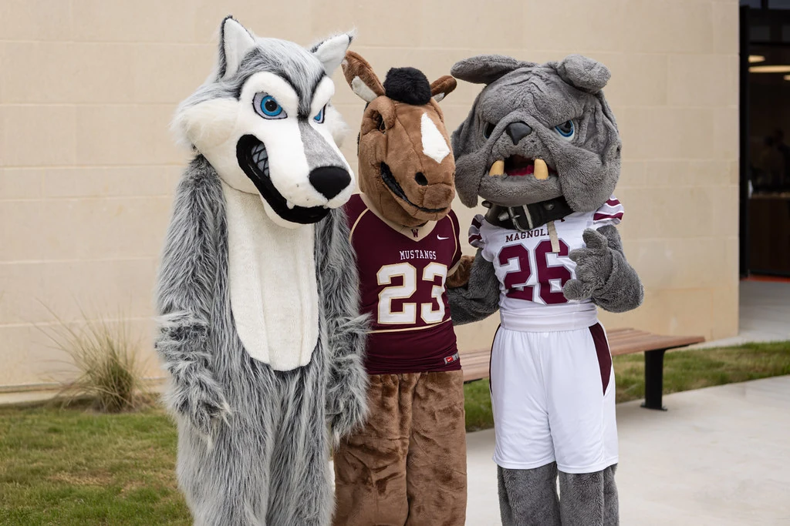
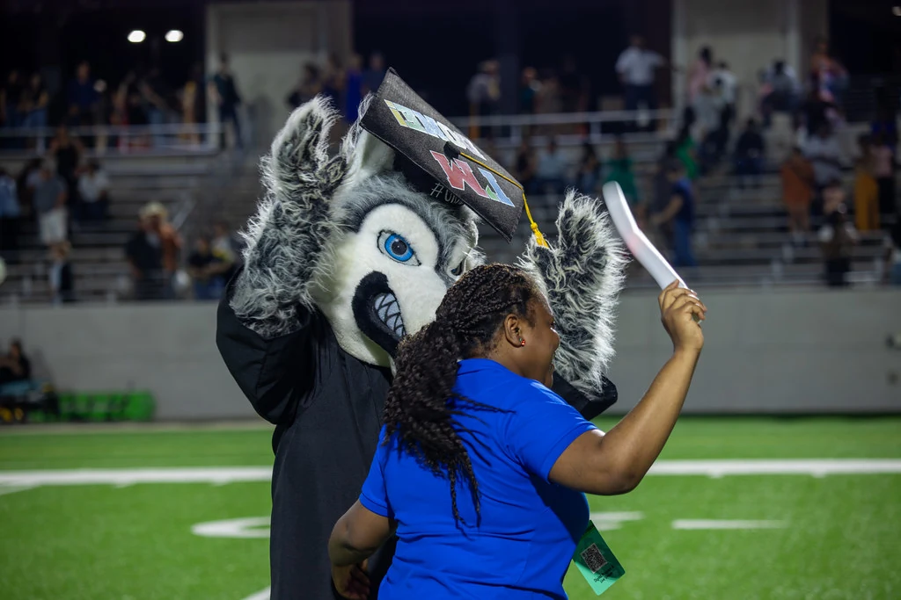
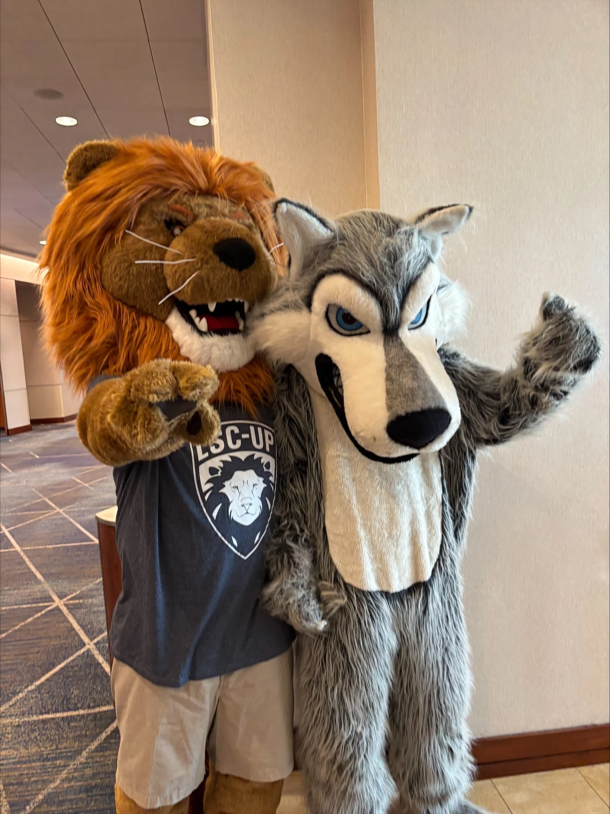
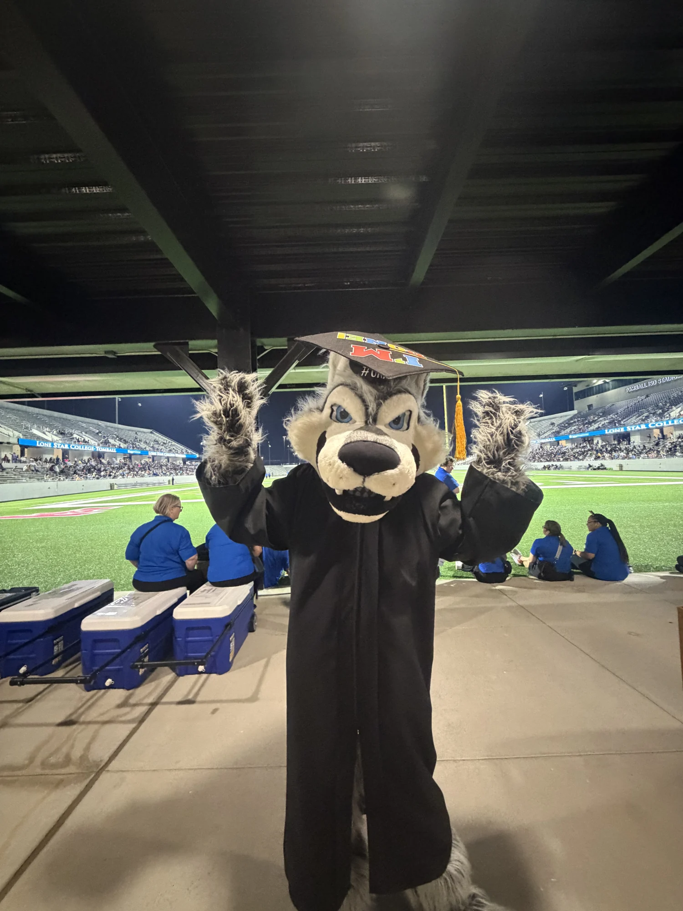
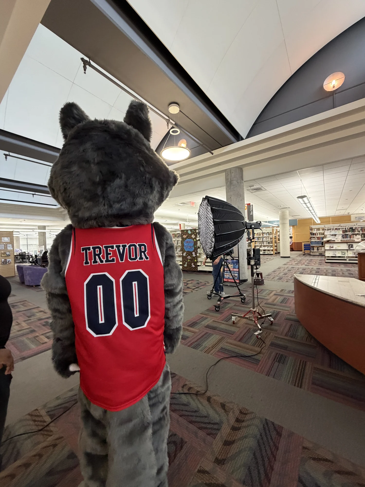
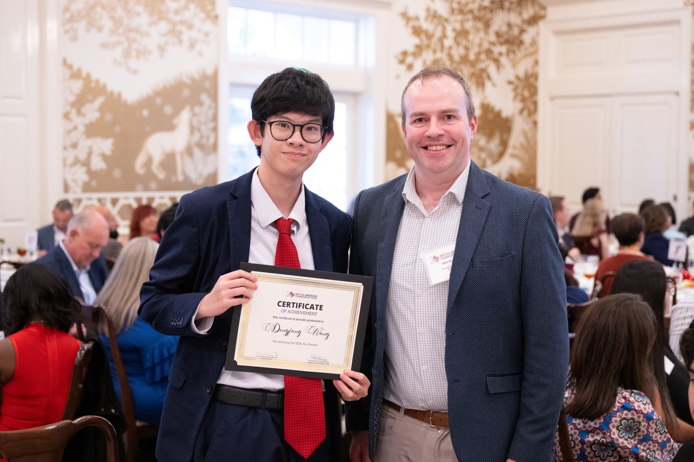
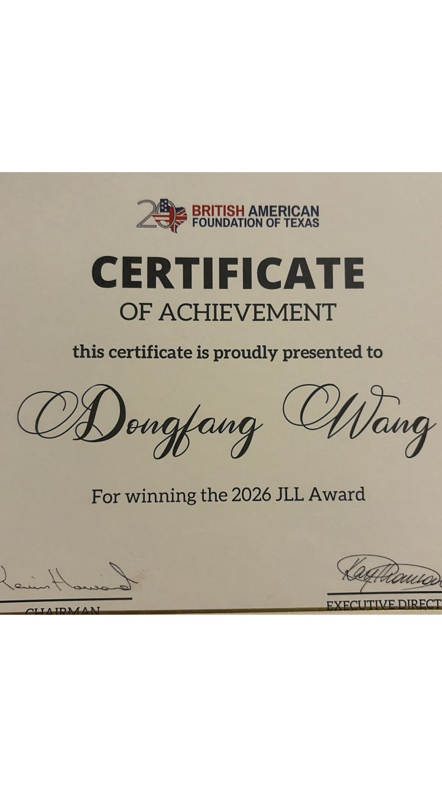

Visual Math
I built a plugin for Obsidian on desktop that lets people write equations, draw graphs, and add chemistry and physics notation to their notes. It works offline and supports English, Chinese, and Spanish.
Student portfolio · 2025–2026
A business student at Lone Star College–Tomball.
I study business and enjoy building tools, working with data, and learning through research. Here are some of my projects and experiences.
Associate of Arts, Field of Study in Business
Expected May 2027

I built a plugin for Obsidian on desktop that lets people write equations, draw graphs, and add chemistry and physics notation to their notes. It works offline and supports English, Chinese, and Spanish.

I built a Chrome extension that helps readers check an article’s sources and supporting evidence. It works locally in English and Chinese and lets readers download a summary. It is available on the Chrome Web Store.
This project helped me practice market research and data analysis. I compared similar channels and used viewing data to make decisions about topics and titles.
October 23, 2026
Money is the Cattle’s Feed: A Regression Analysis of Macroeconomic Factors Influencing U.S. Cattle Export Markets
I presented research on how exchange rates and feed costs relate to U.S. beef export prices at HCC Northeast Campus, Codwell Hall. I used monthly data from 2010–2020 and compared models with and without a four-month delay in corn prices.
ECONH 2301 · Professor Shuang Xu
The presentation is a later revision of the honors paper below.
Professor Shuang Xu
The Impact of Macroeconomic Factors and Production Lags on the U.S. Beef Export Market (2010–2020).
A study of how economic conditions and feed costs relate to beef export prices.
Dr. Alice Ferron-Gabriele
I used Hessian journals and memoirs to explore their lives and contributions beyond military service.
Professor Jill Brumer
I compared how music shapes emotion, character, and storytelling in theatre.
I helped students find campus resources and worked at the Career and Transfer Connections front desk.
I also took event photos, interviewed participants, and helped with website updates and campus videos.
At the Timberwolf Leaders Showcase, I shared my background, work, and goals with an audience.

5 Minutes with Timberwolf Leaders · Co-editor
Open video ↗Campus film · Creator
Open video ↗I volunteered as the campus mascot at the LSC-Magnolia Center grand opening, Tomball Open House, and commencement in 2026. I also volunteered at the Lone Star Performing Center on April 11, 2025.







British American Foundation of Texas

Global Scholar — Honors Undergraduate Research Track, accepted Fall 2025.
Phi Theta Kappa — member since 2025.
LSC–Rice Take Flight — program participant, 2025–2026.
I enjoy listening to music, cycling, photography, exploring food, and visiting art galleries and museums. I’m especially interested in classical music and its background, and I studied piano in the past.